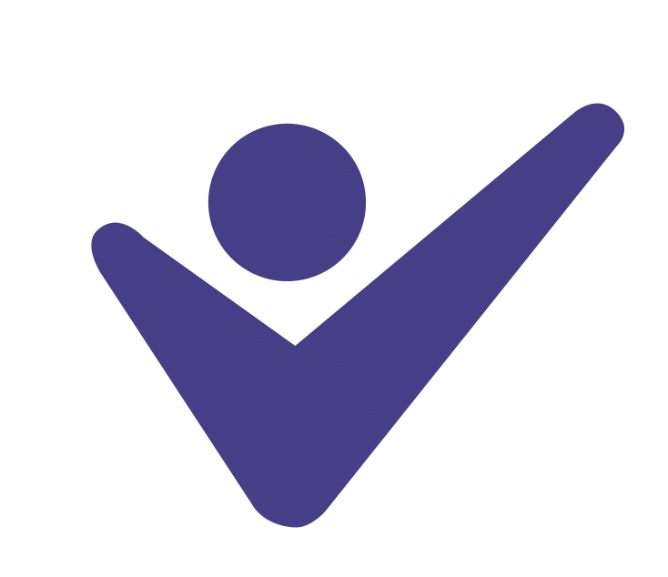

{{header}}
<div class="container">
	<h1 class="finance">Finance Consultant </h1>
	<article>
		<h2>Catherine Wainwright ACMA CGMA</h2>

		<section class="info-right finance">
			<h2>Finance and Consultancy Services</h2>
			<ul>
				<li>Management accounts, key performance monitoring</li>
				<li>Start up business advice and assistance</li>
				<li>Preparation of statutory accounts, VAT returns and Tax returns</li>
				<li>Funding advice</li>
				<li>Assistance with company formation and business planning</li>
				<li>Advice on choosing and implementing IT solutions</li>
				<li>Bookkeeping</li>
				<li>Training in bookkeeping/record keeping</li>
			</ul>
		</section>

		<section>
			Catherine Wainwright is an associate member of CIMA (Charted Institute of Accountants) and a registered CIMA Member in Practice. Catherine is a Management Accountant who has worked in a number of different business and financial functions.  Her career began at British Steel and she has held a number of management accounting and financial management roles within the global steel and automotive manufacturing industries.  Catherine is also an active member of the Doncaster branch and North East Area board for CIMA (Chartered Institute of Management Accountants).
		</section>

		<section>
			If you need help with<span style='font-family:arial;'>:</span>
			<ul>
				<li>Improving business processes</li>
				<li>Cash-flow and cost control</li>
				<li>Preparing and submitting your accounts</li>
				<li>Improving business efficiency</li>
				<li>Remaining competitive in a difficult trading environment</li>
			</ul>
			Then contact Catherine now.
		</section>

		<section>
			<h3>Contact</h3>
			Catherine's website is <a class="link-underline" href="http://www.cmw-bas.co.uk">www.cmw-bas.co.uk</a>
		</section>
	</article>
</div>
{{footer}}